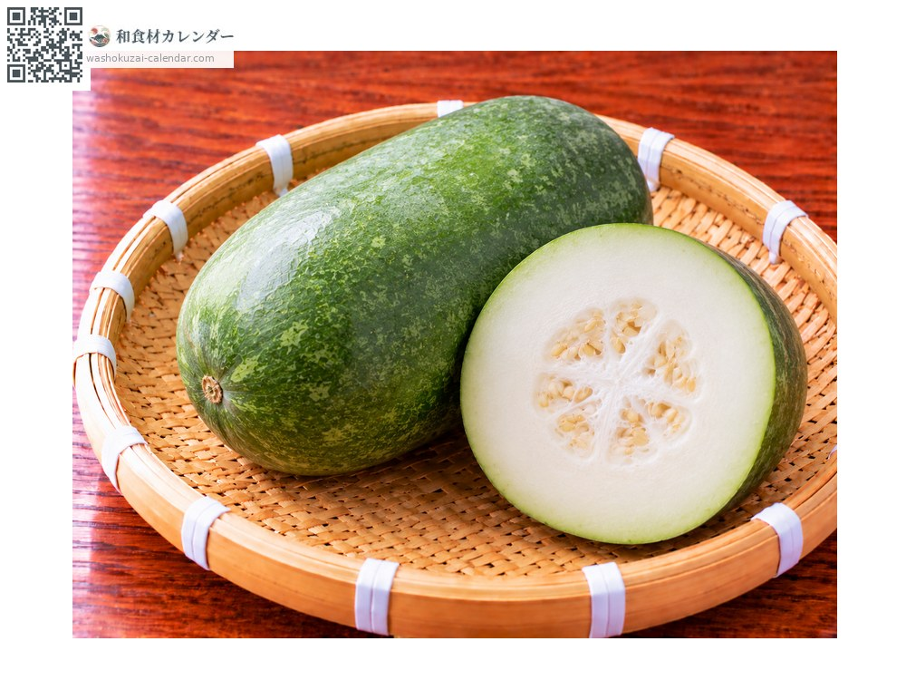
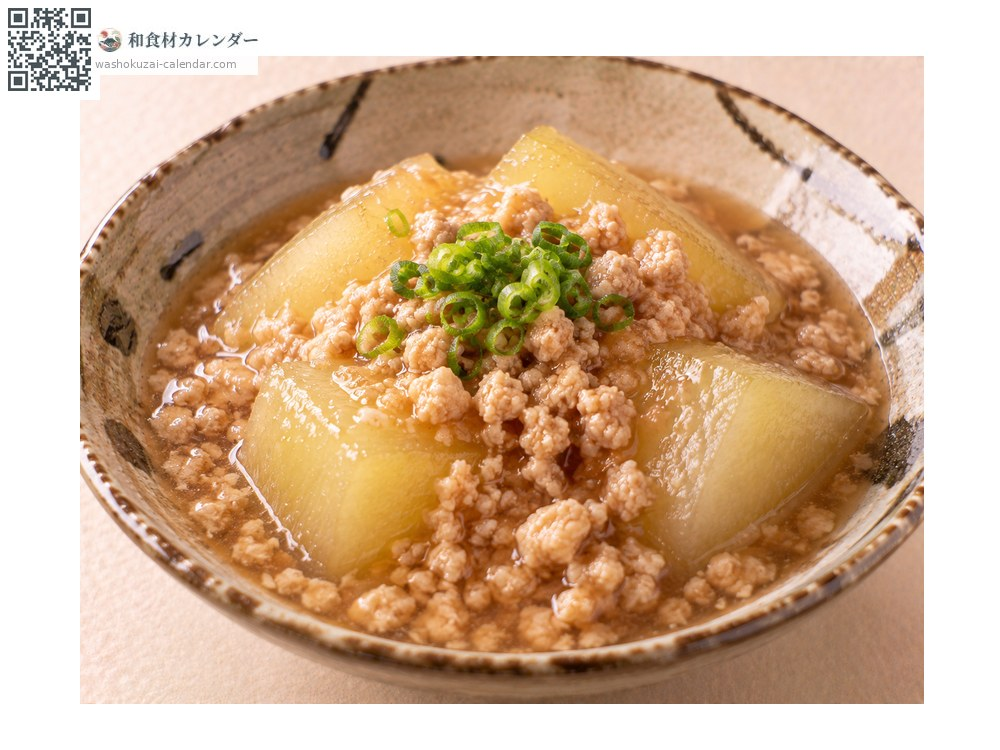
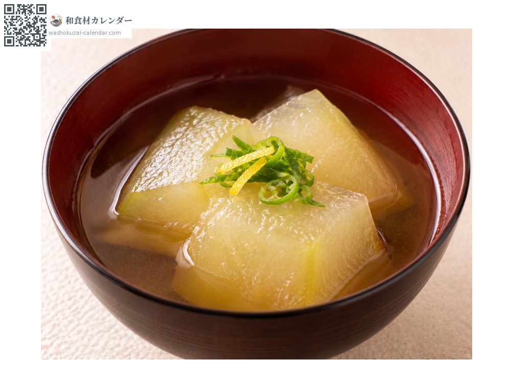
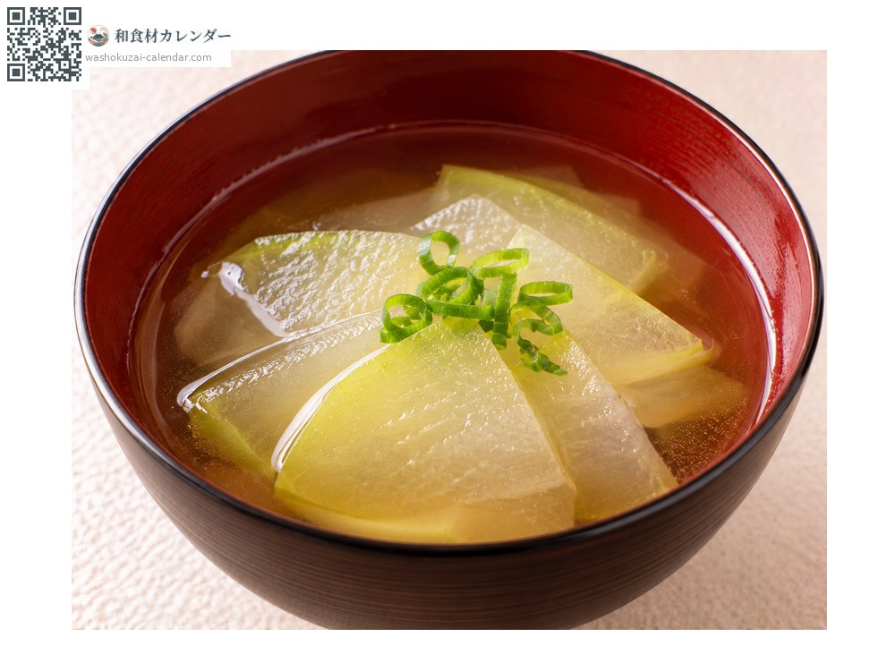
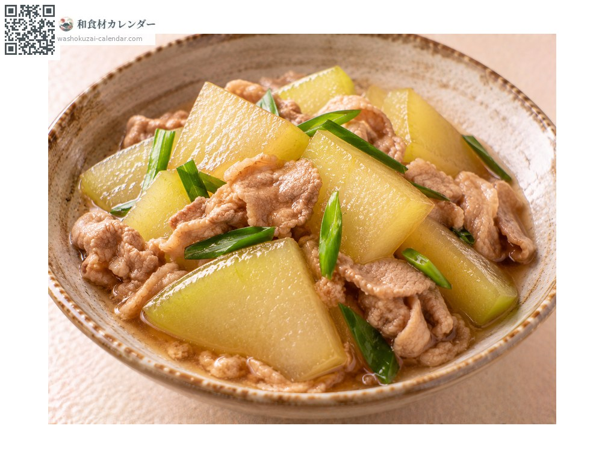

ผัก
ฟักเขียว
冬瓜 とうがん togan
ชื่ออื่นtogan, tougan
อร่อยที่สุดในเดือน มิ.ย., ก.ค., ส.ค.

ช่วงที่อร่อยที่สุด
ม.ค.
ก.พ.
มี.ค.
เม.ย.
พ.ค.
มิ.ย.
ก.ค.
ส.ค.
ก.ย.
ต.ค.
พ.ย.
ธ.ค.
ช่วงอร่อยที่สุดมีจำหน่าย
วิธีปรุง

ราดซอสไก่สับ
ตุ๋นในน้ำดาชิแล้วราดซอสไก่สับข้น เป็นเมนูประจำฤดูร้อน

ตุ๋นซึมรส
ปาดมุมแล้วตุ๋นอย่างเบามือจนใส ดูสวยงาม

ใส่ซุป
หั่นบางใส่ซุปใส สัมผัสนุ่มละมุน

ผัด
ผัดแบบจีน ยังคงความกรุบไว้
วิธีเลือก
ผิวมีนวลขาว ยกแล้วรู้สึกหนัก ไม่มีรอยช้ำ
วิธีเก็บรักษา
ทั้งลูกเก็บในที่มืดเย็นได้หลายเดือน เมื่อผ่าแล้วควักไส้ ห่อฟิล์มแช่เย็น
แหล่งผลิตหลัก
เกร็ดน่ารู้
เก็บเกี่ยวในฤดูร้อน แต่ชื่อมาจากการที่เก็บทั้งลูกไว้ได้ถึงฤดูหนาว เป็นน้ำกว่าเก้าสิบเปอร์เซ็นต์และแทบไม่มีรสในตัวเอง จึงปรุงให้ดูดซับรสน้ำดาชิ เชื่อว่าช่วยลดความร้อนในร่างกาย จึงกินกันในหน้าร้อนมาแต่โบราณ
วัตถุดิบที่อร่อยที่สุดในช่วงเดียวกัน
 หน่อไม้ฝรั่ง
หน่อไม้ฝรั่ง ผักกาดหอมห่อ
ผักกาดหอมห่อ ผักปลัง
ผักปลัง เมียวกะ (ดอกขิงญี่ปุ่น)
เมียวกะ (ดอกขิงญี่ปุ่น) ใบชิโสะ
ใบชิโสะ ยอดอ่อนซันโช
ยอดอ่อนซันโช เมล็ดซันโชอ่อน
เมล็ดซันโชอ่อน ขิงญี่ปุ่น
ขิงญี่ปุ่น